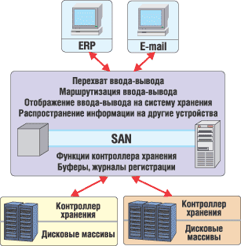
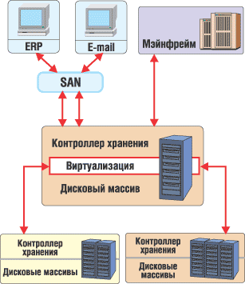
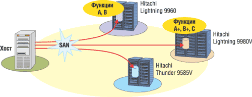
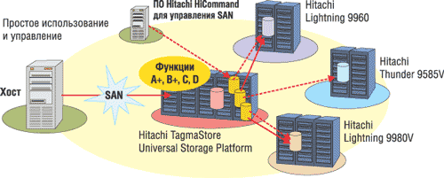
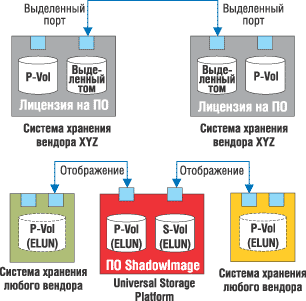

Олег Спиряев
Технология виртуализации уже много лет используется для маскирования сложности систем, реализации новой функциональности и совершенствования производительности, увеличения емкости и доступности. Как известно, виртуализация представляет один физический сервер как множество логических. Например, RAID - это технология виртуализации, используемая в дисковых системах для повышения доступности и производительности. Виртуальные сети (VLAN) и появившиеся недавно виртуальные сети хранения (VSAN) улучшают безопасность и доступность сетей IP и Fibre Channel.
По мере растущей популярности SAN многие производители выпустили решения для виртуализации хранения, реализованные в виде приставок или специальных коммутаторов, устанавливаемых в SAN. Часто эти решения позиционируются как панацея для клиентов, столкнувшихся с постоянно увеличивающейся потребностью в емкости и сложностью инфраструктуры хранения, а также как способ снизить затраты. К сожалению, такие подходы к виртуализации хранения и разработанные на их основе продукты в ряде случаев не способны решить все задачи клиентов. Дело в том, что они обладают ограниченной масштабируемостью и привносят еще один уровень сложности в канал передачи данных, что приводит к увеличению нагрузки на сеть, ухудшает доступность и ведет к росту затрат.
Выпустив на рынок платформу Hitachi TagmaStore Universal Storage Platform, корпорация Hitachi Data Systems (http://www.hds.com) предложила для решения этих проблем принципиально новый подход к виртуализации хранения. Он поддерживается масштабируемой аппаратной платформой с высокой производительностью, емкостью, возможностью подключений и функциональностью. Так, Universal Storage Platform способна виртуализовать до 32 Пбайт данных на внутренних и внешних гетерогенных системах хранения, поддерживает организацию логических разделов физических ресурсов хранения, обеспечивает перемещение данных между разными уровнями хранения без нарушения работы приложений для управления жизненным циклом информации и репликацию гетерогенных томов данных на большие расстояния для восстановления после катастроф. Более того, виртуализация, реализованная рядом с источником данных, гарантирует надежную защиту и максимальную производительность.
Ведущие аналитики из Data Mobility, ESG и Gartner считают, что потребность в виртуализации хранения связана с необходимостью упростить управление хранением и ресурсами данных в условиях усиливающегося спроса на системы хранения и усложнения их функциональности. Появление сетей хранения данных стало первым этапом, на котором было обеспечено совместное использование систем хранения несколькими серверами приложений. Тем не менее, хотя SAN и позволяет объединять в пул гетерогенные ресурсы хранения, серверы приложений должны по-прежнему использовать каждое устройство хранения по отдельности и не способны разделять функциональность или емкость разных систем хранения. Цель виртуализации хранения - "сплавить" группы гетерогенных систем хранения в единый пул ресурсов хранения. Это упрощает управление, улучшает эффективность использования ресурсов хранения, обеспечивает легкую миграцию данных между разными уровнями хранения, снимает барьеры несовместимости и интегрирует общую функциональность для пула гетерогенных ресурсов хранения.
Многие производители рассматривают распространение SAN как возможность вывести на рынок виртуализацию хранения за счет имеющейся сетевой инфраструктуры. Некоторые реализуют виртуализацию in-band, или симметричную - с помощью контроллера приставки в коммутаторе SAN. Другие компании применяют виртуализацию out-of-band - асимметричную, когда контроллер расположен вне пути данных SAN и связан по отдельной сети с агентами на хостах, которые перехватывают и перенаправляют ввод-вывод SAN. Помимо переадресации ввода-вывода по пулу хранения, в обоих контроллерах виртуализации реализована дополнительная "интеллектуальность" для обеспечения функциональности, которая раньше использовалась только в системах хранения класса high-end (например, зеркалирование и репликации). Считается, что, благодаря соединению через SAN, эти решения более эффективны, чем контроллеры хранения, поскольку они обеспечивают общую функциональность для гетерогенных систем хранения. Однако ряд производителей систем хранения и SAN считает, что интеллектуальные функции лучше реализовать на уровне SAN, а в качестве систем хранения должны использоваться стандартные компоненты.
Технологии виртуализации SANОбъединенный пул хранения в SAN может быть симметричным или асимметричным. В первом случае говорят о применении технологии in-band SAN virtualization. Средства виртуализации категории in-band размещаются непосредственно на пути данных от приложения к коммутатору. Управляющее устройство находится на тракте обмена между серверами и накопителями, и потому весь трафик проходит через него. Здесь же осуществляется трансляция физических устройств в логические. У симметричного решения есть очевидные достоинства - простота установки и администрирования; прозрачность для серверов и ОС (при использовании серверов приложений не требуются специальные драйверы); возможность расширять функциональность управляющего устройства независимо от серверов и систем хранения. Асимметричный пул хранения (out-of-band SAN virtualization) строится с использованием сервера метаданных. Здесь предполагается наличие центральной точки управления и виртуализации с сохранением возможности прямой связи между серверами и накопителями. Таким образом, при виртуализации в режиме out-of-band система управляет пересылкой данных между приложением и коммутатором или сервером на их пути к устройству хранения, находящемуся в сети. Средства управления виртуализацией этой категории подключаются непосредственно к коммутатору или серверу, на котором находятся все необходимые драйверы. Следовательно, средства управления размещаются за пределами прямого маршрута прохождения данных и не могут стать узким местом. |
Варианты виртуализации
Существует четыре варианта организации виртуализации хранения: на хосте, в сети (с помощью приставок или коммутаторов), в контроллере или на платформе виртуализации на основе контроллера системы хранения.
Виртуализация на базе хоста
Виртуализация хранения на уровне хоста используется достаточно давно. Первоначально она применялась для организации логического тома из физических адресов и номеров LUN, которые "видит" интерфейс хоста. Такой тип виртуализации вместе с дополнительными функциями мгновенных снимков, зеркалирования и репликации реализуется с помощью ПО, называемого "менеджеры томов". Первые версии менеджеров томов были разработаны еще тогда, когда системы хранения подключались напрямую к хостам, и потому не поддерживают SAN. Хотя некоторые функции (например, репликация) могут выполняться между гетерогенными устройствами, обычно виртуальные тома ограничены только одним типом запоминающего устройства на один том. Недостатки виртуализации на базе хоста заключаются в том, что на нее уходят рабочие циклы хоста и ее применение ограничено только тем хостом, на котором установлен менеджер томов. Кроме того, менеджеры томов зависят от платформы хоста и часто встроены в его ПО.
Сетевая виртуализация с помощью коммутатора
За последние несколько лет на рынок вышло много продуктов для виртуализации на базе SAN, и развернулась настоящая "война" между сторонниками виртуализации in-band и out-of-band. Однако некоторые эксперты полагают, что оба этих подхода не уменьшили сложность, а лишь добавили еще один уровень сложности в ядро сети хранения. Функциональность, которая раньше реализовывалась на границе сети контроллерами хранения, теперь переработана для внедрения в ядре SAN, и в результате связанные с дополнительными накладными расходами задержки ощущаются всеми пользователями SAN.
Интеллектуальные функции важны для SAN, но пользу от них удастся получить только в том случае, когда им предоставляется доступ к правильной информации. Эксперты, в частности, утверждают, что находящийся в центре сети коммутатор не знает, куда должен идти ввод-вывод приложения, работающего на хосте, или где в системе хранения размещены данные. Для получения этой информации выполняется перехватывание и переадресация ввода-вывода, что нарушает целостность исходного запроса ввода-вывода. Однако эта информация напрямую доступна контроллеру хранения, который и выступает целевым адресатом ввода-вывода хоста. Кроме того, протоколы для реализации безопасности в масштабе всей сети, например, IPSEC и ESP, не могут работать, если между конечными точками (хостом и системой хранения) есть прокси-сервер (интеллектуальные функции виртуализации).
Виртуализация на уровне контроллера
Другие компании продвигают решения виртуализации within-the-box (системы хранения), представляющие собой фирменный пул блоков, которые можно объединять в логические модули. Хотя решения within-the-box имеют определенные преимущества с точки зрения простоты конфигурирования, они не способны построить многоуровневый пул хранения и создают дополнительные проблемы для целостности и качества сервиса (quality of service, QoS). Фрагментация пространства для хранения данных также ухудшает эффективность его использования. Решения in-the-box плохо работают с приложениями, в которых используется собственный механизм управления адресным пространством, например, с базами данных. Как полагают специалисты Hitachi, ни один из этих подходов не может обеспечить масштабируемость, соответствующую росту объемов данных сейчас и в будущем, и в результате, несмотря на наличие множества предлагаемых решений для виртуализации, ни одно из них не добилось успеха на рынке.
Новое решение
В платформе Universal Storage Platform используется подход к виртуализации хранения на основе интеллектуального контроллера. Universal Storage Platform использует сетевые соединения SAN и в то же время поддерживает подключение напрямую к хостам (открытым системам и мэйнфреймам). Работая как интеллектуальный контроллер хранения, Universal Storage Platform обеспечивает прямой доступ к информации, связанной с исходным и конечным адресом ввода-вывода, поэтому она оптимальна для виртуализации хранения и данных на границе сети.
Считается, что такой подход переносит те функции, которые интенсивно загружают ресурсы (например, зеркалирование и репликацию), на границу сети, где они и должны использоваться. В отличие от иных подходов он не создает дополнительной нагрузки на каждую операцию ввода-вывода, происходящую по сети.
Хотя Universal Storage Platform с помощью виртуальных портов расширяет возможности подключения хостов на несколько порядков, она не может служить заменой интеллектуальных коммутаторов. Разработчики полагают, что интеллектуальные коммутаторы больше всего подходят для маршрутизации и управления SAN - они обрабатывают информацию о маршрутах и контролируют состояние и производительность сети, реализуя такие полезные сервисы, как защита от переполнения буфера и построение виртуальных SAN для обеспечения бесперебойной работы. Universal Storage Platform работает вместе с интеллектуальными коммутаторами для обеспечения доступности, QoS и безопасности сетей хранения. Более того, Universal Storage Platform обеспечивает масштабируемые аппаратные и программные решения, удовлетворяя текущие и будущие требования к хранению и данным на основе простого эволюционного подхода к виртуализации.
Эволюционный подход к виртуализации
Считается, что эволюционный процесс виртуализации хранения начался в середине 1990-х годов с появления логических устройств Logical Device (LDEV), позволяющих организовать логические модули из физических дисков. Абстрагирование логического представления тома от физического устройства обеспечило применение RAID для защиты от сбоев дисков. Hitachi выбрала архитектуру, которая реализует глобальный общий кэш данных и отделение управляющей информации от данных. Управляющая информация хранится в отдельной кэш-памяти и передается по специальным маршрутам. Разделение управляющей информации и данных позволяет динамически менять конфигурацию системы хранения и устраняет необходимость в отображении статичной конфигурации устройств на кэш данных, а также обеспечивает подключения к гетерогенным хостам - открытым системам (Unix и Linux), Microsoft Windows и мэйнфреймам.
Следующим этапом эволюции стал выпуск в июне 2000 г. первого поколения корпоративных систем хранения Hitachi Lightning 9900 Series, которые разрабатывались с учетом требований к возможности подключения и масштабируемости сетевого хранения. В них впервые была применена архитектура матричного коммутатора, устраняющая узкие места предыдущего поколения архитектуры систем хранения с общей шиной, рассчитанного на системы хранения с прямым подключением. В Lightning 9900 Series также впервые использовалось ПО Hitachi Volume Migration (прежнее название CruiseControl), способное обнаруживать узкие места производительности и динамически переконфигурировать системы хранения без нарушения приложения. Была реализована и функция временных меток, обеспечивающая сохранение порядка доставки данных при асинхронной репликации на практически неограниченное расстояние между контроллерами Lightning 9900 Series, что позволило реализовать географически распределенную между регионами систему восстановления после катастроф в соответствии с требованиями SEC/OCC/FED для крупных финансовых институтов.
Учитывая возросшее значение сокращения расходов за счет консолидации, специалисты Hitachi оснастили семейство систем хранения Lightning механизмом виртуальных портов. Это улучшило подключаемость, обеспечило безопасную организацию хранения данных с разных хостов и возможность использования системы приоритетов доступа для того, чтобы разные приложения и пользователи могли совместно использовать ресурсы хранения и в то же время никто не мог бы просмотреть или изменить чужие данные. Эти технологии были реализованы в представленных в мае 2002 г. корпоративных системах хранения Hitachi Lightning 9900 V, которые поддерживают на каждом физическом порте Fibre Channel до 128 виртуальных портов для расширения возможностей подключения. Для безопасности каждому виртуальному порту может быть назначен собственный домен Host Storage Domain. Эта функция гарантирует, что пользователи разных виртуальных портов не будут иметь доступа в чужое адресное пространство, даже если они используют один и тот же физический порт. Модульная система хранения Hitachi Thunder 9500 V Series с двумя контроллерами также поддерживает эту функцию.
В 2003 г. Hitachi Data Systems представила ПО Hitachi HiCommand Storage Services Manager на основе продукта AppIQ, которое выполняет обнаружение, визуализацию и конфигурацию гетерогенных систем хранения других производителей. ПО Storage Services Manager основано на стандарте CIM (Common Information Model), разработанном рабочей группой SNIA SMI-S. Продукт Hitachi Storage Area Management Suite обеспечивает распознавание устройств с предоставлением ресурсов, настройкой и другими функциями для управления гетерогенной многоуровневой средой сетевого хранения. Тогда же было разработано новое ПО Hitachi CrossSystem Copy function (прежнее название - HiCopy) для перемещения данных между системами хранения из семейств Thunder и Lightning, что обеспечивает миграцию данных между уровнями хранения без вмешательства хоста.
Коль скоро ПО CrossSystem Copy способно перемещать данные между системой Lightning 9900 V Series и внешними системами Thunder 9500 V Series, у специалистов возникла идея реализовать эту функцию и для других внешних систем хранения. Более того, они решили вообще не перемещать данные, а оставлять их на внешнем устройстве и отображать Lightning LDEV на внешние тома так же, как нa внутренние. Это дало бы возможность управлять всей подключенной к контроллеру внешней и внутренней емкостью как единым пулом хранения вместо разрозненных уровней хранения. Кроме того, это позволяет перенести всю функциональность и мощь контроллера Lightning 9900 V Series на подключенные к нему внешние системы хранения и управлять ими с помощью ПО Storage Services Manager. Именно так работает виртуализация хранения, реализованная в Universal Storage Platform.
Подход Hitachi к виртуализации хранения
Специалисты Hitachi считают, что предложенный ими подход намного эффективнее всех предыдущих попыток реализовать виртуализацию хранения и обеспечивает немедленный выигрыш для бизнеса. Дело в том, что, в отличие от других подходов к виртуализации (рис. 1), Hitachi не вводит еще один уровень сложности между сервером приложений и системой хранения. Более того, ее решение не расположено в сети Fibre Channel SAN и не использует SAN для виртуализации, поэтому оно не только способно реализовать виртуализацию для открытых систем хранения на основе Fibre Channel, но и поддерживает подключение к хостам напрямую по Fibre Channel и по ESCON/FICON к мэйнфреймам. В конфигурациях с прямым подключением, где еще не внедрены SAN, открытые системы и хосты могут напрямую подключаться к 192 портам Fibre Channel или 48 портам FICON в качестве первого шага к построению SAN. По мере наращивания конфигурации к ней можно добавлять коммутаторы и директоры SAN для эффективности маршрутизации, и при этом будет поддерживаться увеличение числа виртуальных портов Universal Storage Platform и добавление внешних систем хранения. При виртуализации внешних систем хранения снимается ограничение на использование с мэйнфреймами только дисковых массивов класса high-end - LDEV мэйнфреймов могут отображаться на более дешевые внешние системы ATA или Serial ATA.
|  | Рис. 1. Виртуализация SAN.
|
В Universal Storage Platform виртуализация встроена в архитектуру контроллеров Hitachi и теперь расширяется на внешние системы хранения так, что это не увеличивает сложность и не создает привязанности к фирменной архитектуре (рис. 2). Приложения соединяются непосредственно с образом кэш-памяти в Universal Storage Platform. Отсутствуют приставки, расположенные перед системой хранения, и больше не нужно вскрывать пакеты и перенаправлять ввод-вывод. Дополнительные сервисы хранения, такие, как репликация и зеркалирование, не влияют на коммутаторы и директоры в центре сети. Нет никаких элементов и решений, которые добавляют сложность и увеличивают задержки.
|  | Рис. 2. Виртуализация на базе контроллера хранения.
|
Кроме того, в отличие от виртуализации типа in-the-box, виртуализация Hitachi не использует фирменный формат данных - данные по-прежнему хранятся в формате внешних устройств (рис. 3). Если пользователю потребуется вернуться назад и напрямую подключить внешние устройства к открытым системам, то не надо будет заново форматировать данные. Правда, такой возврат вызовет потерю части функциональности контроллера Universal Storage Platform, включая доступ к быстрой общей кэш-памяти и возможности такого мощного ПО, как Hitachi ShadowImage InSystem Replication, Hitachi TrueCopy Remote Replication, Volume Migration, Universal Replicator и Hitachi Data Retention Utility (прежнее название LDEV Guard).
|  | |
|  | |
| Рис. 3. Виртуализация внешних систем хранения: существующая ситуация (а) и новый подход (б).
| |
Новая концепция отображения функций Universal Storage Platform на существующие внешние системы хранения повышает эффективность их использования, обеспечивая им доступ к быстрой общей кэш-памяти и развитым функциям ПО.
Виртуализация внешних систем хранения
Серверы приложений подключаются к виртуальным портам хранения Universal Storage Platform, и им назначается Host Storage Domain со своим собственным адресным пространством. Виртуальные логические устройства Virtual Logical Devices (VLDEV) получают адреса из этого адресного пространства и определяются в общей кэш-памяти данных Universal Storage Platform (они могут определяться как тома открытых систем или тома мэйнфреймов). Эти VLDEV могут отображаться на внутреннюю дисковую систему или внешние, подключенные через порты Fibre Channel в Universal Storage Platform к портам Fibre Channel внешней системы хранения.
Подключение внешней системы хранения к Universal Storage Platform - это просто подключение ее портов Fibre Channel к внешним портам Universal Storage Platform и назначение этим портам номера LUN. Universal Storage Platform будет опрашивать подключения к внешним портам, обнаружит эти LUN и идентифицирует их как тома внешней системы хранения. Внешняя система хранения "видит" Universal Storage Platform как хост Fibre Channel и взаимодействует с ней по стандартному протоколу Fibre Channel. Для соединения не требуются специальные API. Новое ПО Hitachi Universal Volume Manager обеспечивает единое упрощенное управление для до 32 Пбайт внутренней и внешней емкости.
Аппаратная платформа для виртуализации
Специалисты Hitachi полагают, что Universal Storage Platform существенно превосходит по производительности все другие системы хранения. Новое аппаратное обеспечение использует третье поколение архитектуры матричного коммутатора Hitachi Universal Star Network. Во многом за счет этого платформа Universal Storage Platform обеспечивает 2 млн IOP (операций ввода-вывода в секунду). Внутренняя емкость увеличилась до 332 Тбайт за счет установки 1152 дисков по 300 Гбайт. Суммарной внутренней и внешней емкостью в 32 Пбайт можно управлять как единым пулом хранения. Подключаемость к хостам выросла до 1024 виртуальных портов на один порт Fibre Channel (всего до 32 768 виртуальных портов). Пропускная способность кэш-памяти - это фактор, ограничивающий производительность в любой ориентированной на кэш-память системе класса high-end. Новая архитектура Universal Star Network обеспечивает пропускную способность кэш-памяти 68 Гбайт/с и способна одновременно выполнять 256 операций с памятью.
Ответы на трудные вопросы
За последние пять лет объем хранимых данных у корпоративных клиентов вырос с десятков до сотен терабайт. Отметим, что данные, в отличие от других ИТ-ресурсов, не меняются. Можно предположить, что в ближайшие несколько лет клиенты будут хранить уже петабайты данных, а в будущем объемы хранения будут измеряться в экзабайтах. Однако специалисты Hitachi полагают, что Universal Storage Platform с виртуализацией на базе контроллеров даст возможность решить многие проблемы, возникающие сегодня у пользователей. Конечно, перенос терабайт и петабайт данных по-прежнему будет длиться дни и даже недели, но Universal Storage Platform позволяет проводить миграцию в фоновом режиме без нарушения работы приложений и доступности данных. По-прежнему серьезные обновления систем хранения будут происходить не чаще одного раза в три-пять лет, но теперь новая функциональность будет поддерживаться и устаревшим оборудованием, что продлит его жизненный цикл. Если потребуется заменить технологию, то процесс перемещения данных будет происходить намного проще.
Universal Storage Platform превращает сегодняшнюю концепцию многоуровневого хранения в гибкий пул внутренней и внешней емкости хранения. Перемещение данных между этими уровнями выполняется довольно просто с помощью ПО копирования ShadowImage или ПО Volume Migration. Теперь тома не надо перемещать из одного уровня на другой только для обновления блоков. Тома остаются на месте, а перемещаются только образы изменившихся блоков, хранящиеся в кэш-памяти. Требования непрерывности бизнеса выполняются с помощью ПО синхронной репликации TrueCopy или Universal Replicator для асинхронной репликации на большие расстояния.
Открывается возможность для других производителей предлагать дешевые системы хранения, которые смогут использовать мощные функции, разработанные Hitachi. Это одно из главных преимуществ Universal Storage Platform.
В Hitachi полагают, что ее подход к виртуализации - это просто расширение ее базовой архитектуры, однако другим производителям систем хранения будет не так просто повторить это достижение. Базовые элементы архитектуры Hitachi, которые и делают возможной виртуализацию, - это разделение кэш-памяти управляющей информации и данных (что обеспечивает безопасность, производительность и простоту управления), общая глобальная кэш-память данных с возможностью динамического конфигурирования и коммутируемая архитектура, обеспечивающая масштабируемость по нескольким измерениям.
Применяемая другими компаниями архитектура кэш-памяти не разделяет управляющую информацию и данные либо не обеспечивает общую кэш-память данных. Эти архитектуры либо не обеспечивают совместное использование, либо требуют тщательного отображения конфигураций дисков на таблицы кэш-памяти. В результате при изменении конфигурации нарушается нормальная работа системы. Это делает труднодостижимым, если не невозможным, в таких архитектурах подключение гетерогенных внешних дисков. Жесткие архитектуры типа "точка-точка" или на основе общей шины не могут масштабироваться иначе как путем добавления новых подобных соединений, что нарушает нормальную работу системы. Поэтому для реализации возможностей, сравнимых с функциями виртуализации хранения Universal Storage Platform, требуются фундаментальные изменения в архитектуре кэш-памяти.
Кроме того, Hitachi разработала обширный портфель функциональности на базе контроллеров. Используя архитектуру визуализации, она легко расширила эти функции на внешние системы хранения. Не нарушающая нормальную работу миграция между разными уровнями хранения и асинхронная репликация постоянных групп - это только некоторые из многих функций, которые крайне трудно реализовать с помощью интеллектуального коммутатора или интеллектуального контроллера хранения любой другой компании. Hitachi многие годы инвестировала в разработку ПО, которое позволяет клиентам управлять виртуализацией хранения и использовать ее в соответствии с потребностями бизнеса.
Преимущества подхода Hitachi
Universal Storage Platform дает выигрыш для бизнеса за счет следующих возможностей:
- многоуровневой организации хранения для управления жизненным циклом данных Data Lifecycle Management;
- отображения функциональности high-end на системы среднего класса для выполнения требований непрерывности бизнеса;
- обновления технологии, используемой в устаревших системах хранения, и защиты вложенных в эти системы инвестиций;
- упрощения расширения емкости хранения, возможностей подключения, функциональности ПО и производительности для поддержания гибкости бизнеса;
- недорогого хранения архивных данных для мэйнфреймов;
- обеспечения QoS приложений с помощью логических разделов внутри ресурсов хранения;
- значительно более надежной универсальной репликации на большие расстояния для гетерогенных систем хранения;
- управления ресурсами хранения в масштабах предприятия с помощью единого набора инструментов, правил и процессов.
Хотя по производительности, емкости и возможностям Universal Storage Platform намного превосходит все другие системы хранения класса high-end, ее преимущества не ограничены только этим. В связи с возникновением задач снижения рисков для бизнеса и повышения его эффективности требуются дополнительные усовершенствования для поддержки больших пулов хранения, которые необходимы для применения решений Data Lifecycle Management и Utility Storage. В результате потребовалось построение еще одного уровня хранения на основе дешевых модульных систем, где хранятся архивные данные и оперативные данные бизнеса, для которых необязательны высокая скорость чтения и максимальная доступность, но которые должны сохраняться для использования в приложениях бизнес-класса и выполнения требований законодательства.
Однако для решения последней задачи недостаточно только дешевых систем - требуется защитить данные с помощью "мгновенных снимков" и зеркалирования, обеспечить непрерывность бизнеса на основе репликации на большие расстояния, обеспечить онлайновую миграцию для замены устаревшего оборудования и применять функции защиты данных для сохранения целостности и конфиденциальности данных. Эти функции нельзя реализовать в дешевой модульной архитектуре с двумя контроллерами.
До сегодняшнего дня эти функции были доступны только в системах хранения класса high-end, таких, как Lightning 9900 V Series, или реализовывались с помощью серверного ПО, из-за чего возрастали затраты и увеличивались перерывы в работе для технического обслуживания. Если эти функции добавлялись к модульным системам хранения, то цены таких систем резко возрастали.
Подход Hitachi к виртуализации вместо добавления функций high-end в модульную архитектуру хранения отображает функциональность high-end, реализованную в Universal Storage Platform, на подключенные внешние модульные системы хранения. Такой подход расширяет функции high-end, которые необходимы для выполнения требований законодательства, на дешевые модульные системы и устраняет окно технического обслуживания с помощью онлайновой репликации и миграции.
Особо подчеркивается, что при внедрении решения Hitachi для виртуализации не нужно дорогостоящее специальное оборудование для копирования между контроллерами и ПО для репликации (рис. 4) - достаточно сделать "мгновенный снимок" ShadowImage виртуальных томов на внешних или внутренних дисках и назначить виртуальный целевой адрес внешнему диску, находящемуся на расстоянии десятков километров. Отпадает необходимость в использовании двух управляющих модулей, которые сообщаются между собой по сложному фирменному протоколу.
|  | Рис. 4. Виртуализация Universal Storage Platform.
|
Недорогое решение для мэйнфреймов
Хотя объем данных на мэйнфреймах растет не так быстро, как в среде открытых систем, мэйнфреймы по-прежнему используются для выполнения критически важных приложений на многих предприятиях. До сих пор с мэйнфреймами можно было использовать только очень дорогие системы хранения класса high-end. После выхода Universal Storage Platform логические устройства LDEV мэйнфреймов можно отображать на сравнительно недорогие модульные или SATA-системы хранения.
Мэйнфреймы используют ПО SMS Hierarchical Storage Management (HSM) для миграции данных между разными уровнями. Для чтения данных обычно нужно выполнить обратную их миграцию на уровень первичной системы хранения. При использовании Universal Storage Platform ПО ShadowImage или Volume Migration можно применять для перемещения данных мэйнфреймов на уровни недорогих систем хранения без помощи ПО HSM. Кроме того, к данным можно обращаться напрямую, даже если они находятся на нижнем уровне хранения. Теперь выполнение функций HSM обходится намного дешевле. При использовании внешней системы хранения снижается стоимость репликации данных мэйнфреймов. Вместо репликации через директоры FICON/ESCON можно применять более эффективную с точки зрения затрат репликацию по Fibre Channel с использованием внешних систем хранения.
Обеспечение заданного уровня сервиса
Появившиеся в Universal Storage Platform логические разделы физических ресурсов - это первая реализация в системах хранения технологий больших серверов Hitachi. ПО Hitachi Virtual Partition Manager распределяет внутренние и внешние физические ресурсы хранения, включая порты, кэш-память и диски, между отдельно управляемыми виртуальными машинами Private Virtual Storage Machines. Разделы можно динамически модифицировать в соответствии с требованиями QoS приложений с учетом изменений в бизнесе и приоритета приложений.
Universal Storage Platform позволяет с помощью ПО Virtual Partition Manager создать до 32 виртуальных машин. Каждую Private Virtual Storage Machine хост "видит" как отдельную систему хранения с собственным управлением и индивидуальным (виртуальным) серийным номером. Требования к ресурсам одной виртуальной машины не могут повлиять на ресурсы другой машины, находящейся на той же физической Universal Storage Platform. До появления Hitachi Private Virtual Storage Machines критически важные приложения с определенными требованиями к качеству услуг сервиса не могли использовать одну систему хранения вместе с другими приложениями из-за риска конкуренции за ресурсы. Теперь эти приложения могут использовать консолидированные системы хранения, и при этом их QoS гарантируется логическими разделами.
Репликация для гетерогенных систем хранения
ПО Universal Replicator применяет принципиально новый и значительно более мощный подход к реализации асинхронной репликации на основе журналирования на диске. Вместо записи обновлений в кэш-память и сохранения их там до тех пор, пока не получено подтверждение успешной доставки данных на конечное устройство для репликации, ПО Universal Replicator записывает обновления на диск и заносит их в журнал. На конечное устройство посылаются оповещения с инструкциями прочитать журнал и затем считать или "вытянуть" данные с удобной для устройства скоростью. Это уменьшает нагрузку на кэш-память и освобождает ее для обслуживания ввода-вывода приложений.
Кроме того, поскольку обновления данных записываются на диск, то после восстановления связи передача возобновляется в правильной временной последовательности. Без журналирования и сохранения последовательности репликацию требуется проводить с самого начала или с последней точки синхронизации. ПО Universal Replicator обеспечивает улучшенную непрерывность бизнеса практически при любом расстоянии и совершенствует операции ИТ за счет высвобождения ресурсов кэш-памяти и уменьшения отрицательных последствий нарушения связи. Данное ПО развивает успех возможностей асинхронной репликации в ПО TrueCopy Remote Replication, обеспечивая надежное решение для непрерывности бизнеса. Кроме того, ПО Universal Replicator использует встроенную виртуализацию Universal Storage Platform для расширения возможностей репликации на внешние системы хранения.
Управление ресурсами хранения
На многих предприятиях используются системы хранения разных производителей или системы разных классов одной компании. В результате часто образуются "острова хранения", где есть свои менеджеры, набор инструментов, политик и процессов. Такие ситуации не только неэффективны и связаны с большими затратами, но и увеличивают риск серьезных ошибок, приводящих к нарушению нормальной работы.
Помимо возможности задействовать Universal Storage Platform для виртуализации внешних подключенных систем хранения в единый пул, администраторы могут использовать ПО HiCommand Storage Services Manager для управления с одной консоли гетерогенными системами хранения. Кроме того, ПО CrossSystem Copy, Volume Migration и Universal Replicator предоставляет администраторам единый набор процессов для перемещения данных и непрерывности бизнеса в масштабах всего предприятия. Для клиентов это означает возможность радикально повысить эффективность управления хранением, направить освободившийся персонал на другие проекты, значительно сократить расходы и улучшить бизнес компании в целом.
Высокая оценка индустрииЖурнал Storage и его онлайн-редакция SearchStorage.com назвали универсальную платформу хранения данных Hitachi TagmaStore "Продуктом 2004 года", наградив его золотой медалью в категории дисков и дисковых подсистем. Жюри выбирало "Продукт года" среди продуктов хранения данных, представленных, модернизированных или выпущенных в период с 24 октября 2003 г. по 25 октября 2004 г. Universal Storage Platform получила эту награду за инновации, производительность, простоту интеграции в существующие системы, простоту эксплуатации и управления, функциональность и экономическую эффективность.
Платформа Universal Storage Platform была анонсирована 7 сентября 2004 г. и заслужила похвалы от сотрудников редакции журнала Storage, по мнению которых, новое решение "указывает путь системам хранения данных корпоративного класса". При награждении редакция журнала Storage повторила свою положительную оценку: "Наши судьи присвоили Universal Storage Platform очень высокие баллы за ее инновационность... ко внутренним накопителям, как и к накопителям, расположенным вовне, можно обращаться через один и тот же интерфейс". Журнал Storage и SearchStorage.com выбрали трех победителей ("золотого", "серебряного" и "бронзового" в пяти категориях: ПО резервного копирования и послеаварийного восстановления, аппаратура резервного копирования, диски и дисковые подсистемы, сетевое оборудование, аппаратура управления резервными устройствами хранения данных. Награды присуждали сотрудники редакции TechTarget Storage Media Group при участии пользователей, отраслевых экспертов, аналитиков и консультантов. |